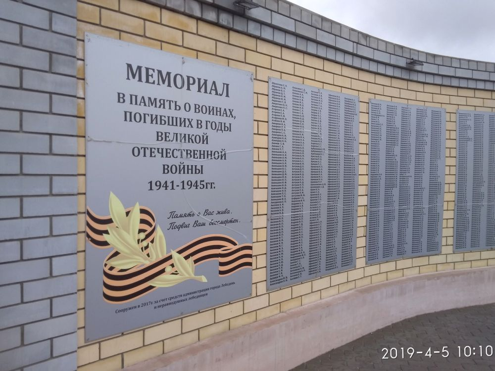

Места нашей области, посвящённые Великой Победе
 Домой
Домой
Мемориальный комплекс воинской славы (Лебедянь)
Памятник воину–освободителю установлен на площади Ленина в 1960–х годах на месте братской могилы. В 1995 году 9 мая в нишу памятника была заложена капсула с именами лебедянцев, не вернувшихся с поля брани. В 2013 году был установлен обновленный памятник. Вместо низкого постамента появился высокий, а скульптура воина-освободителя была изготовлена из меди и полностью повторила своего железобетонного «брата-близнеца». Памятник-ветеран после демонтажа перевезен на новое место прописки – в село Куймань, где он по-прежнему напоминает современникам о земляках, отдавших жизнь на поле брани за свободу Отечества. В 2015 году мемориальный комплекс вновь предстал в обновленном виде, пополнившись гранитными стелами с барельефами девяти земляков – Героев Советского Союза. В 2017 году рядом с памятником была установлена памятная стела, на которой увековечены имена 7 тысяч лебедянцев, отдавших жизни за свободу и независимость Отечества. Торжественное открытие обновленного мемориала состоялось 29 июля в рамках празднования Дня города. Стела была возведена городской администрацией на пожертвования предприятий, организаций и жителей города.
В центре мемориальной композиции расположен памятник воину-освободителю. На высоком постаменте возвышается фигура воина в плащ-палатке, с автоматом на правом плече и с каской в левой руке. В верхней части постамента – орден Отечественной войны. Перед памятником размещены гранитные стелы с барельефами девяти земляков – Героев Советского Союза. Обрамляет памятник стела с именами воинов–земляков, погибших в годы Великой Отечественной войны. Стела выполнена из декоративного кирпича в виде двух полукружий. За памятником расположена мемориальная доска с именами захороненных здесь воинов.
Изображения:
